v2에서 달라진 점
발표자는 지난 영상에서 프로젝트 안에 들어가는 모듈형 소프트웨어 팩토리를 만들었어요. Claude Code 서브에이전트들이 스펙을 쓰고, 코드를 짜고, 리뷰하는 구조였죠. 이번 2편은 그 영상에 달린 피드백을 받아 고친 버전이에요.
바뀐 점은 마인드맵의 'What's new in v2' 카드에 다섯 줄로 정리돼 있어요. 분홍 화살표가 하나씩 가리키는 항목이에요.
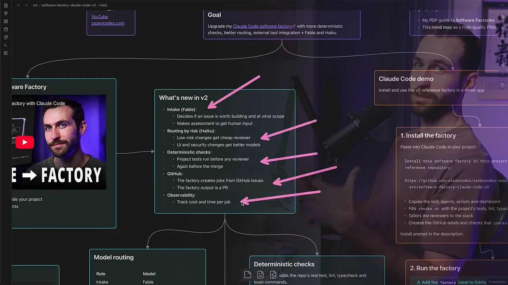
| 바뀐 점 | 무엇을 하나요 |
|---|---|
| 접수 (Fable) | 이슈가 만들 가치가 있는지, 어느 범위로 만들지 정해요. 필요하면 사람에게 물어봐요 |
| 위험도별 라우팅 (Haiku) | 위험이 낮은 변경엔 싼 리뷰어를, UI·보안 변경엔 더 좋은 모델을 붙여요 |
| 결정론적 검사 | 프로젝트 테스트를 리뷰어보다 먼저, 머지 직전에 한 번 더 돌려요 |
| GitHub | GitHub 이슈에서 작업이 생기고, 결과물은 PR이에요 |
| 관측 가능성 | 작업마다 비용과 걸린 시간을 기록해요 |
영상 후반은 직접 따라 하는 데모예요. 발표자는 자기 프로젝트에 설치하는 과정부터 보여 주니 같이 따라 해 보라고 권해요.
공장 흐름: 이슈에서 PR까지
전체 흐름은 마인드맵의 'The factory' 그림 한 장에 다 들어 있어요. 왼쪽 GitHub issues에서 시작해 Intake, Spec writer, Builder, Gate를 지나 오른쪽 리뷰어 네 칸과 Approver로 가요. 상자마다 아래 작은 글씨가 그 단계를 맡는 모델이에요.
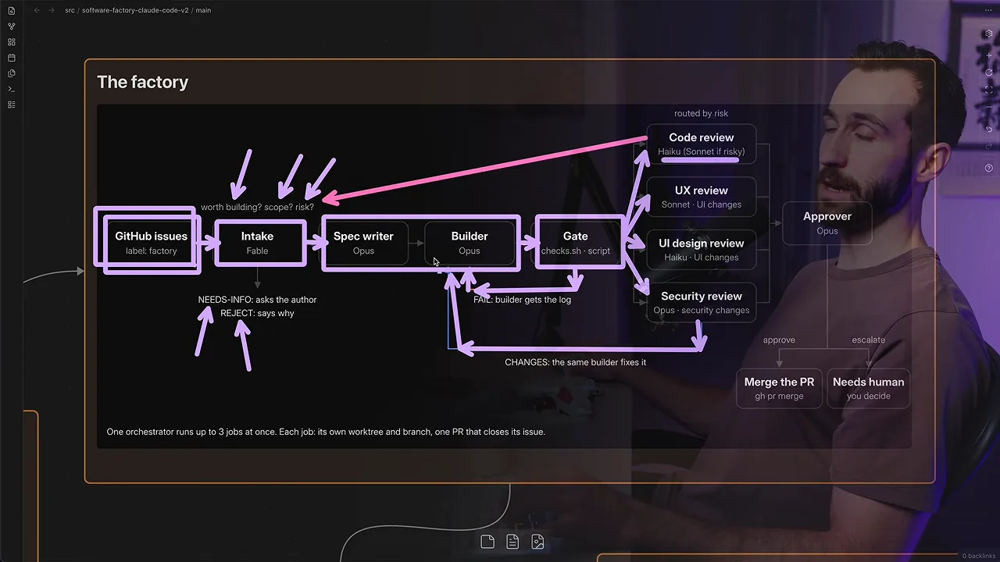
FAIL)와 리뷰 수정 요구(CHANGES) 모두 같은 빌더에게 돌아가요. 영상 03:15에서 보기접수: 만들 가치가 있나요?
이슈는 한 번에 여러 개 들어와도 돼요. 접수 단계에서 Fable이 프로젝트 맥락 안에서 이 기능을 만들 가치가 있는지, 범위는 어디까지인지, 위험도는 얼마인지 판단해요. 그림의 Intake 아래 글씨처럼 정보가 모자라면 작성자에게 묻고(NEEDS-INFO), 아니다 싶으면 이유를 남기고 거절해요(REJECT).
스펙, 빌드, 게이트
통과한 이슈는 스펙 작성자와 빌더가 차례로 맡아요. 둘 다 Opus예요. 발표자는 이 둘을 지금은 나눠 뒀지만 하나로 합쳐도 될 것 같다고 해요.
빌드 결과는 게이트를 지나요. 게이트는 에이전트가 아니라 checks.sh를 돌리는 스크립트라서 싸고 결과가 늘 같아요. 실패하면 빌더가 로그를 받아 다시 고쳐요.
리뷰어와 승인자
게이트를 넘으면 리뷰어들이 동시에 봐요. 흐름도 오른쪽 칸을 표로 옮기면 이래요.
| 리뷰어 | 모델 | 언제 붙나요 |
|---|---|---|
| 코드 리뷰 | Haiku, 위험하면 Sonnet | 항상 |
| UX(User Experience) 리뷰 | Sonnet | UI가 바뀔 때 |
| UI 디자인 리뷰 | Haiku | UI가 바뀔 때 |
| 보안 리뷰 | Opus | 보안 관련 변경일 때 |
코드 리뷰를 Haiku로 하느냐 Sonnet으로 하느냐는 처음에 Fable이 매긴 위험도로 정해요. 발표자는 앞 단계 에이전트의 판단으로 뒤 단계를 바꾸고 비용까지 아낄 수 있다는 걸 보여 주려고 이렇게 짰다고 해요.
리뷰를 모두 통과하면 승인자가 마지막으로 판단해요. 바로 머지해도 되면 gh pr merge로 머지하고, 사람이 봐야 하면 Needs human으로 넘겨요. 그림 맨 아래 문장처럼 오케스트레이터 하나가 최대 3개 작업을 동시에 돌리고, 작업마다 자기 워크트리와 브랜치, 이슈를 닫는 PR 하나를 가져요.
오케스트레이터와 결정론적 뼈대
실제로 쓰는 방법은 단순해요. Claude Code 세션 하나를 열고 /factory run을 치면 그 세션이 오케스트레이터가 돼요. 마인드맵의 'One orchestrator' 카드가 그 규칙을 네 줄로 정리해 둬요.
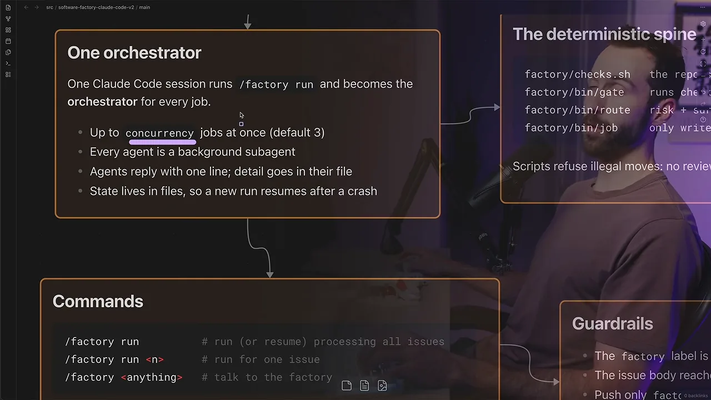
오케스트레이터는 일마다 백그라운드 서브에이전트를 띄워요. 에이전트는 결과를 한 줄로만 답하고, 자세한 내용은 자기 파일에 적어요. 오른쪽 'The deterministic spine' 카드에는 factory/checks.sh, factory/bin/gate, factory/bin/route, factory/bin/job이 보여요. 팩토리와 함께 오는 셸 스크립트예요. 작업을 다음 단계로 밀어 주는 일은 이 스크립트들이 해요.
아래 그림은 이 역할 나눔을 정리한 거예요. 판단은 에이전트가 하고, 확실해야 하는 일은 스크립트가 해요.
명령은 세 가지
명령은 'Commands' 카드 하나에 다 있어요. 마지막 줄의 <anything>이 밑줄 쳐진 부분이에요. 아무 문장이나 넘겨서 팩토리 맥락에서 일을 시킬 수 있어요.
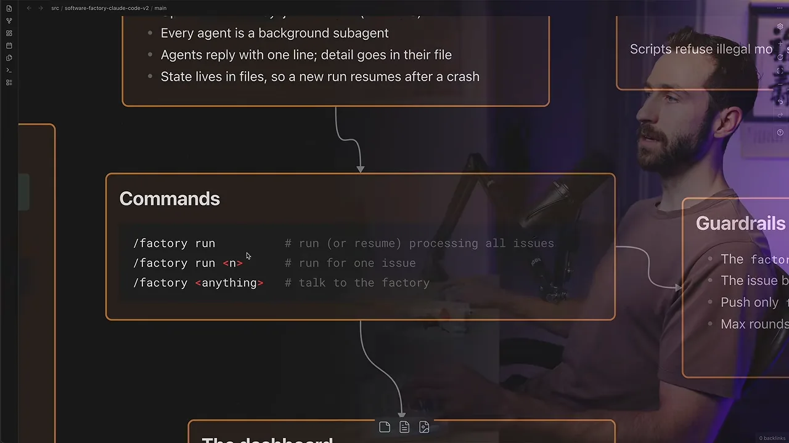
작업이 팩토리를 지나는 모습은 대시보드로 봐요. 동시 실행 수는 기본 3이고, 설치한 뒤 설정 파일에서 바꿀 수 있어요.
설치하기
데모 프로젝트는 note-wall-app이라는 간단한 메모 앱이에요. 벽에 메모를 붙이는 게 전부예요. 팩토리가 GitHub 이슈와 PR을 쓰기 때문에 저장소가 GitHub에 올라가 있어야 해요.
설치 프롬프트 붙여 넣기
Claude Code를 열고 설치 프롬프트를 붙여 넣어요. 내용은 '이 소프트웨어 팩토리를 이 프로젝트에 설치해 줘'와 참고 저장소 주소 한 줄이에요. 오른쪽 브라우저에 열린 저장소 README의 Install 칸에 같은 문장이 있어요.
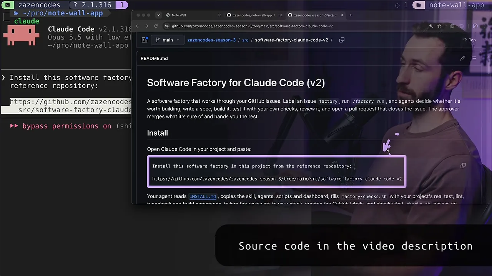
Install this software factory in this project from the reference repository:
https://github.com/zazencodes/zazencodes-season-3/tree/main/src/software-factory-claude-code-v2무엇이 생기나요
설치가 끝나면 폴더 두 개가 생겨요.
.claude/:agents/에 서브에이전트 정의 파일들이,skills/factory/SKILL.md에 팩토리 동작 전체를 설명하는 스킬이 들어가요.factory/: 팩토리 코드예요.bin/의 gate, job, route가 작업을 받아 다음 단계로 넘기고,checks.sh가 CI(Continuous Integration)/CD 같은 결정론적 검사를,config.json이 설정을,dashboard.html이 관찰을 맡아요.
설치 에이전트는 템플릿을 그대로 복사하지 않고 프로젝트에 맞게 고쳐요. 아래는 Claude가 마지막에 남긴 'Changed for Note Wall' 요약이에요.
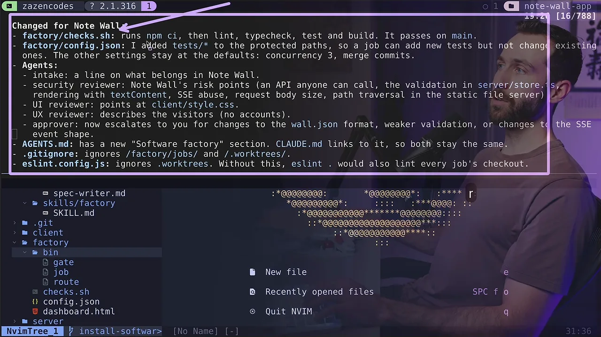
checks.sh가 이제 이 프로젝트의 실제 테스트를 돌려요. 영상 07:09에서 보기요약을 줄별로 보면 이래요. checks.sh는 npm ci 뒤에 lint, typecheck, test, build를 돌리고 main에서 통과해요. config.json에는 tests/*가 보호 경로로 추가돼서, 작업이 새 테스트는 더해도 기존 테스트는 못 바꿔요. 보안 리뷰어에겐 이 앱의 위험 지점(누구나 부를 수 있는 API(Application Programming Interface), 입력 검증, 경로 탐색 등)을 알려 줬어요. AGENTS.md에는 'Software factory' 섹션이 생겨서 팩토리 쓰는 법이 문서로 남아요.
첫 이슈 다크 모드를 끝까지
새 Claude Code 세션(Opus 5.5, low effort)에서 factory run을 처음 치면 대기열이 비어 있다고 나와요. 이슈는 여럿 있지만 factory 라벨이 붙은 게 없어서예요.
라벨을 붙여야 일이 시작돼요
라벨은 일부러 둔 안전장치예요. 여러 사람이 이슈를 올리더라도 어떤 걸 팩토리에 맡길지는 내가 고르게 하려는 거예요. 아래 화면의 Issues 목록에 열린 이슈 다섯 개(Multiple walls, Change display name, Different fonts, Colored sticky notes, Dark mode)가 보여요.
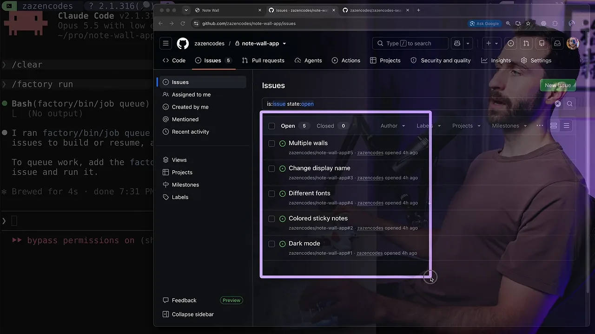
접수 기록 읽기
라벨을 붙이고 같은 명령을 다시 치면 작업이 생기고 접수 단계로 들어가요. 대시보드에서 작업 카드를 누르면 단계마다 쌓인 파일이 보여요. Fable이 쓴 intake.md 맨 위 상자에 DECISION: ACCEPT, RISK: low, SURFACES: ui, RESCOPED: no가 적혀 있어요.
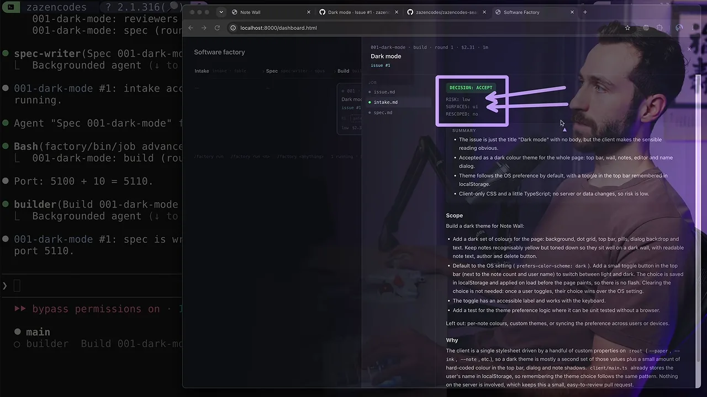
요약 밑에는 Scope(무엇을 만들지)와 Why(왜 그렇게 판단했는지)가 이어져요. 발표자는 에이전트가 무슨 생각으로 작업을 넘겼는지 남겨 두는 게 중요하다고 해요. 디버깅할 때도, 시간이 지나 팩토리가 잘 돌고 있는지 따져 볼 때도 이 기록을 봐요.
빌더 들여다보기
빌드 단계에서는 Claude Code 하단에 builder 서브에이전트가 보여요. 화면에선 'Rewriting theme variables in style.css'를 하고 있어요. Enter로 들어가 무슨 생각을 하는지 보고, 방향을 틀 수도 있어요.
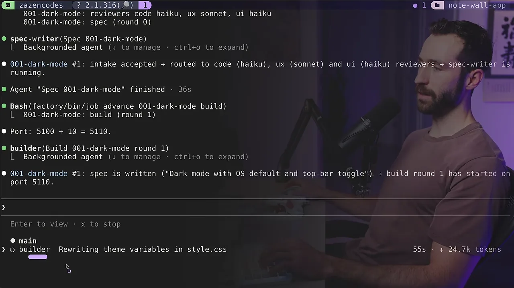
다만 발표자는 이렇게 에이전트와 일일이 대화하는 게 팩토리의 목적은 아니라고 덧붙여요. 할 수 있다는 걸 보여 준 정도예요.
리뷰에서 되돌아가기
빌드가 끝나고 게이트를 통과하면 리뷰 단계로 가요. 그런데 1라운드에서 코드 리뷰가 CHANGES를 냈어요. 아래 화면 터미널 첫 줄에 gate PASS code:CHANGES ux:PASS ui:pending이 보이고, 대시보드 카드의 code 칩이 주황색이에요.
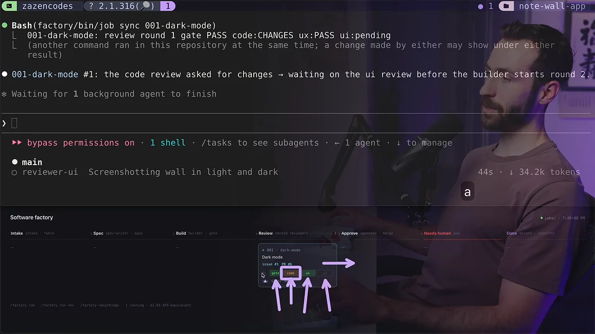
코드 리뷰의 판정은 '가독성 부족 하나'였어요. 발표자 말로는 리뷰어가 꽤 사소한 걸로 트집을 잡은 거예요. 곧 UI 리뷰도 떨어졌고, 작업은 피드백을 들고 빌더로 돌아갔어요. 2라운드에서는 코드와 UI 모두 초록이 됐어요.
여기서 발표자가 짚는 문제가 있어요. 낮은 위험도라 코드 리뷰를 Haiku가 맡았는데, Haiku는 빌더만큼 코드를 이해하지 못할 때가 있어요. 리뷰어가 빌더보다 덜 똑똑하면 오히려 나쁜 흐름이 생길 수 있다는 거예요.
자동 머지까지
승인자는 사람 없이 머지해도 되는 단순한 기능이라고 판단했어요. 아래 화면에 APPROVE와 merged PR #6, 그리고 작업 요약이 나와요.
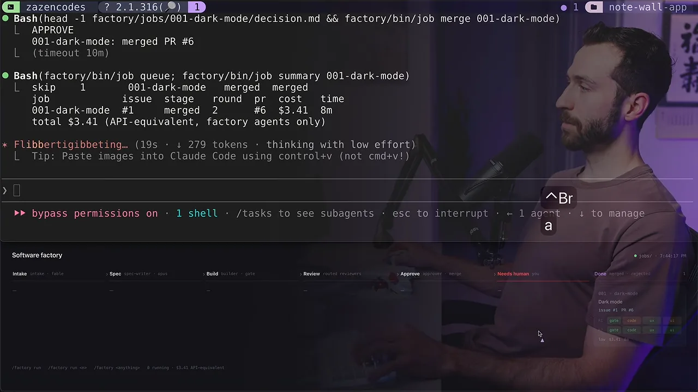
GitHub에서 PR을 열면 팩토리가 만든 커밋들이 다 남아 있고, 맨 아래에 'Pull request successfully merged and closed'가 떠요. 시스템이 내 확인 없이 머지했지만 기록은 그대로 남으니 나중에 추적하기 좋다는 게 발표자의 평가예요.
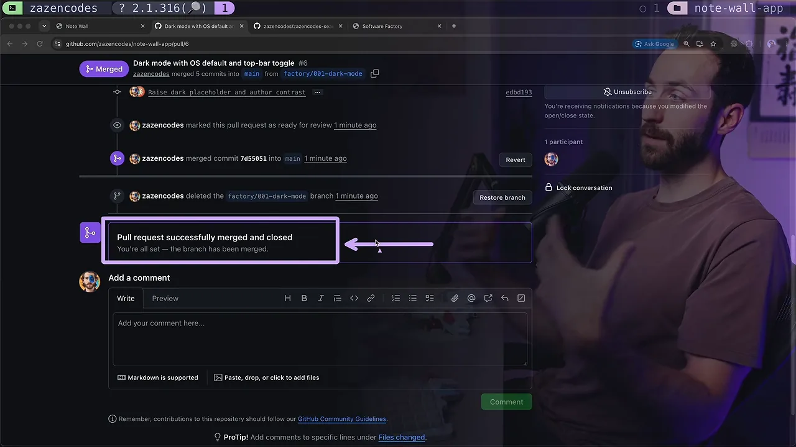
로컬로 돌아오면 설치 때 생긴 파일들이 아직 커밋 안 된 상태라 먼저 커밋하고, git pull로 원격 변경을 받아요. AGENTS.md에 충돌이 조금 있었지만 자동 머지로 정리됐어요. npm run dev로 띄운 앱은 이제 기본이 다크 모드예요.
여러 이슈를 한꺼번에
이번엔 남은 이슈 네 개에 한꺼번에 라벨을 붙여요. 그다음 /factory run 4로 'Different fonts' 하나만 먼저 넣고, 같은 오케스트레이터 세션에서 /factory run을 다시 쳐서 나머지를 넣어요. 오케스트레이터 세션은 계속 쓸 수 있어서, 돌고 있는 작업에 말을 걸 수도, 새 작업을 넣을 수도 있어요.
동시 실행 수는 3
대시보드에는 작업 세 개만 돌고 있어요. 동시 실행 수가 몇이냐고 묻자 오케스트레이터가 바로 답해요.
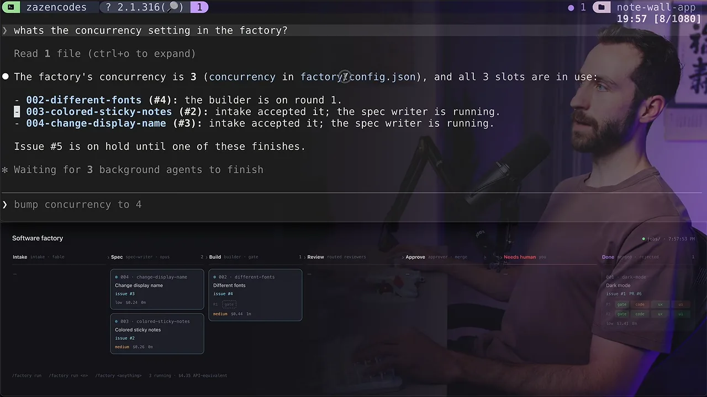
작업마다 시간과 비용
대시보드 카드에는 위험도, 비용, 시간이 찍혀요. 끝난 Dark mode 카드는 8분, 비용은 발표자가 '3.40달러'라고 읽었는데 화면엔 $3.41이에요. 발표자는 구독 플랜으로 돌려서 실제로 낸 돈은 없다고 해요. 그래도 작업끼리 비교해서 어디를 줄일지 찾는 기준이 된다는 거예요.
사람이 필요한 작업
Different fonts가 needs-human으로 멈췄어요. 작업 파일을 열면 빌드가 막혔고, 그 이유가 decision.md에 있어요. 하지만 발표자가 실제로 쓰는 방법은 파일 열람이 아니에요. 오케스트레이터에게 묻거나, 같은 프로젝트에서 새 Claude Code 세션을 열고 팩토리 스킬로 물어요.
물어보니 '접수가 범위를 좁혀 받아들였는데, 폰트를 뭘로 할지 몰라 입력을 원한다'는 답이 왔어요. “알아서 해”라고 답하자 feedback-1.md가 생기고 작업이 다시 빌드 단계로 갔어요.
작업마다 다른 리뷰어
대시보드 카드의 칩 줄을 보면 작업마다 붙은 리뷰어가 달라요. 아래 화면에서 Colored sticky notes(medium)는 gate, code, ux, ui, sec 다섯 칩이 있고, Change display name(low)은 sec 없이 네 칩이에요.

발표자는 medium이라서 보안 리뷰가 붙었고 low라서 안 붙었다고 설명해요. 접수 판단에 따라 흐름이 바뀌니, 사실상 동적인 방향성 비순환 그래프(DAG(Directed Acyclic Graph))라는 거예요. 효율을 높이는 데도 쓸 수 있어요.
세션을 꺼도 다시 살아나요
세션 정리 중에 발표자가 오케스트레이터 세션에서 Ctrl+C를 눌렀어요. 그러자 백그라운드 에이전트가 전부 멈췄어요. 대시보드를 띄우던 셸도 이 세션에 붙어 있었어요. 질문용으로 띄운 두 번째 세션은 꺼도 팩토리에 아무 영향이 없어요.
다시 factory run을 치자 GitHub와 대기열을 보고 모든 작업을 되살렸어요. 팩토리는 꽤 튼튼한 셈이에요. 다만 돌던 작업은 처음부터 다시 해요. 이때도 진행 중이던 UI 리뷰가 날아가서 새로 시작했어요. 그러니 일부러 끄는 건 좋지 않아요.
사람이 결정해야 할 때
잠시 뒤 상황을 보면 사람 확인이 필요한 작업이 쌓였고, 둘은 끝났어요. GitHub에는 이슈 세 개에 factory:needs-human 라벨이 붙어 있어요.
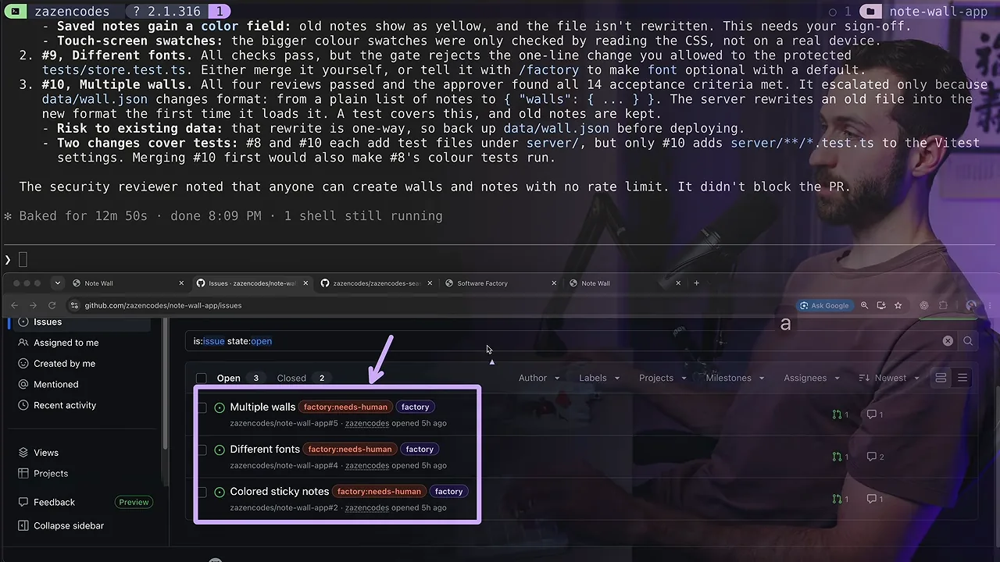
Pull requests 탭엔 열린 PR 세 개와 닫힌 PR 두 개가 있고, 코드에는 'Merge pull request #7, change display name'이 들어와 있어요. 발표자가 좋아하는 점은 깨끗한 새 세션에서 팩토리 명령 하나로 이 맥락을 전부 불러올 수 있다는 거예요.
세 작업에 하나씩 답하기
- Different fonts(#4): 기능이 아니라 팩토리 규칙 때문에 막혔어요. 보호된 테스트 파일을 건드려야 했거든요. 발표자는 팩토리에게 '이건 막히면 안 됐다, 스스로 고쳐라'라고 했고, 공개 저장소의 v2 팩토리에도 같이 반영하게 했어요. 지금 설치하면 이 수정이 들어 있대요.
- Colored sticky notes(#3): 새로 만든 색상 테스트가 서버 쪽 테스트를 건너뛰는 바람에 아예 안 돌았어요. 테스트를 옮겨 다시 돌리겠다는 제안에 그러라고 했어요.
- Multiple walls(#5): 처음엔 일부러 붙잡아 뒀다는 답이 왔어요. 다른 작업이 먼저 머지된 뒤에 이 PR을 합치려는 거예요. 오케스트레이터가 시스템 전체 상황을 알고 있다는 뜻이에요.
아래 화면은 #3을 다시 돌린 결과예요. 3라운드에서 게이트가 통과했고, 이 작업에 붙은 리뷰어와 모델이 한 줄로 찍혀요.
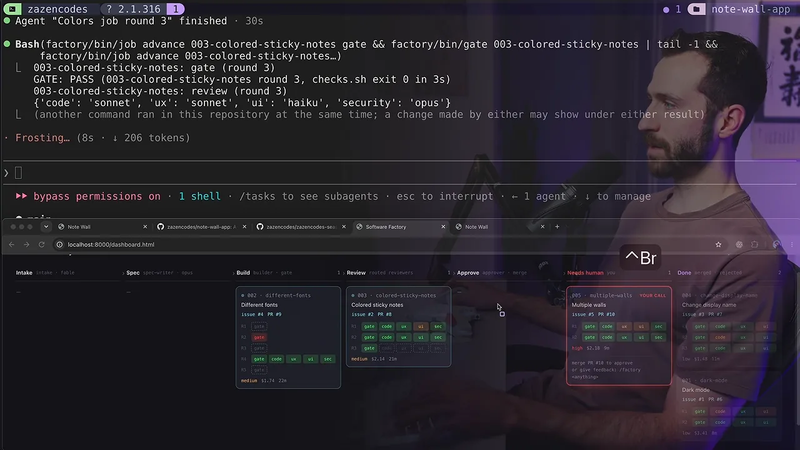
YOUR CALL이 떠 있어요. 영상 22:26에서 보기마지막 남은 Multiple walls
다른 작업이 다 끝난 뒤에도 Multiple walls는 멈춰 있었어요. 발표자는 출력을 줄여 주는 자기 스킬 /tldr로 요약을 받아요. 저장 데이터 형식(data/wall.json)을 되돌릴 수 없게 바꾸는 일이라 내 사인을 기다리고, main보다 뒤처져 있다는 내용이에요. 아래 PR 본문의 'For the human' 칸에도 같은 경고가 있어요.
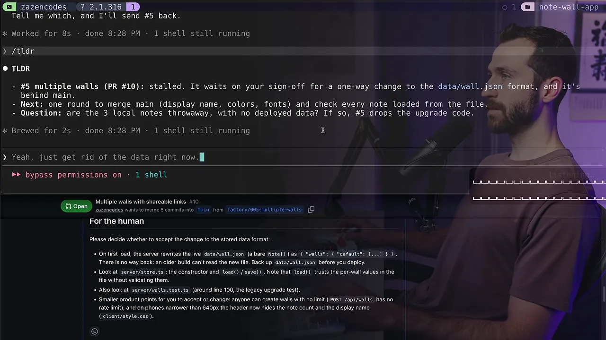
테스트 앱이라 데이터는 지워도 된다고 답했어요. 그러자 Claude가 factory/bin/job feedback 5를 불러 내 답을 feedback-1.md로 남겼어요. 사용자 피드백도 에이전트가 파일에 직접 쓰는 게 아니라 팩토리 스크립트의 함수로 기록돼요.
모든 변경을 받아 앱을 띄우면 메모 색을 바꿀 수 있고(빨강으로 바꿔 봐요), 표시 이름도 바꿀 수 있어요.
상태는 스크립트만 써요
마지막으로 발표자는 마인드맵으로 돌아가 팩토리가 왜 믿을 만한지 설명해요. 답은 두 가지 결정론적 장치예요.
게이트: checks.sh
'Deterministic checks' 카드에는 checks.sh가 저장소의 실제 test, lint, typecheck, build 명령을 담는다고 적혀 있어요. 아래 네 줄은 언제 도는지예요.
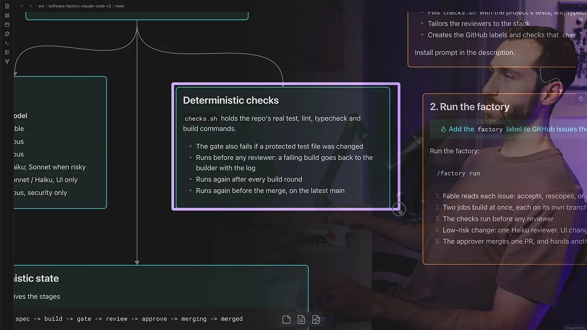
파일 자체는 아주 단순한 bash 스크립트예요. npm 프로젝트라 npm ci 뒤에 lint, typecheck, test, build를 차례로 돌려요. 다른 언어 프로젝트라면 여기에 그 프로젝트의 테스트가 들어가요.
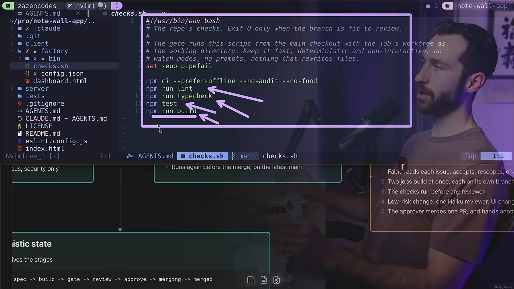
상태: job.json과 factory/bin/job
두 번째 장치는 상태 파일이에요. 'Deterministic state' 카드의 강조된 두 곳을 보면 돼요. 모든 단계를 움직이는 건 job.json이고, 그 파일을 쓰는 건 factory/bin/job뿐이에요.
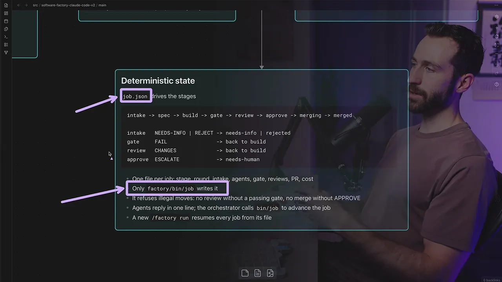
APPROVE 없이 머지로 갈 수 없어요. 영상 25:44에서 보기카드의 단계와 갈림길을 상태도로 옮기면 이래요.
stateDiagram-v2 direction LR [*] --> intake intake --> spec: ACCEPT intake --> needs_info: NEEDS-INFO intake --> rejected: REJECT spec --> build build --> gate gate --> build: FAIL gate --> review: PASS review --> build: CHANGES review --> approve: 모두 PASS approve --> merging: APPROVE approve --> needs_human: ESCALATE merging --> merged
발표자가 거듭 강조하는 점은 이거예요. job.json은 Claude가 기분 따라 고치는 파일이 아니에요. Claude는 factory/bin/job의 함수를 불러서 이 파일을 바꿔요. 스크립트 맨 위 설명에도 'The only writer of factory/jobs/<job-id>/job.json'이라고 적혀 있어요. 명령은 job queue(GitHub 이슈를 보고 대기열 확인), job create, job advance, job merge, job feedback 등이에요.
작업 데이터는 내 컴퓨터에만 있어요
실제 작업 데이터는 factory/jobs/ 폴더에 작업 하나당 폴더 하나로 쌓여요. git에서 제외돼서 GitHub에 백업되지 않아요. 남기고 싶으면 따로 저장하는 흐름을 만들어야 해요. 발표자라면 Google Cloud Storage에 저장하는 워크플로를 Claude에게 만들어 달라고 하겠대요.
Change display name 작업 폴더를 열면 build.md, decision.md, intake.md, issue.md, spec.md와 round-1~round-3 폴더, 그리고 job.json이 있어요. 대시보드에 보이던 내용이 전부 이 마크다운 파일에서 와요.
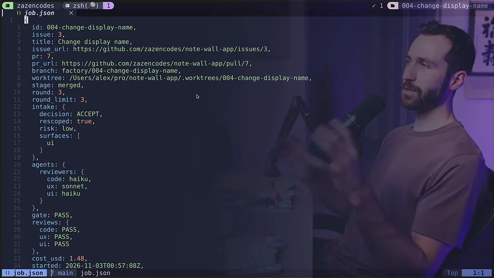
맺음말: 복잡도, 비용, 프로덕션
마무리는 카메라 앞에서 말로만 해요. 화면에 보여 줄 자료가 없어서, 발표자가 말한 다섯 가지를 정리하고 피드백 루프 하나를 그림으로 옮겼어요.
더 나아졌지만 더 복잡해요
발표자는 1편보다 잘 돌아간다고 느껴요. 하지만 그만큼 복잡해졌고, 복잡하다고 늘 좋은 건 아니에요. 원하는 성능은 지키면서 내게 맞게 줄일 곳을 찾아보라고 권해요.
싼 모델이 더 비쌀 수 있어요
비용은 토큰 가격으로 냈다면 얼마일지 추정한 값이에요. 실제로 내는 돈은 아니어도 작업끼리 비교하는 기준이 돼요. 이걸 줄이려고 리뷰어를 Haiku로 바꾸고 싶어질 수 있어요. 그런데 Haiku 리뷰어가 문제를 깊이 생각하지 못하고 작업을 자꾸 빌더로 되돌리면 오히려 돈이 더 들어요. 승인자를 Haiku로 두는 것도 생각해 볼 수 있지만, 머지 결정을 Haiku에게 맡길지는 망설여진대요.
GitHub 이슈가 관측 장치가 돼요
발표자가 마음에 들어 하는 건 GitHub 이슈와 PR을 입출력으로 쓴 점이에요. 운영 중인 서비스의 성능 지표를 감시하다가 문제가 생기면 자동으로 이슈를 만들고 factory 라벨을 붙이면 돼요. 그러면 배포 후 모니터링이 별도 층 없이 그대로 팩토리의 입력이 돼요.
프로덕션에 바로 붙여도 될까요?
소프트웨어 팩토리에 늘 따라붙는 비판이 '이걸 실제 서비스에 붙이면 미친 거다'예요. 발표자도 동의해요. 30분짜리 영상의 코드를 눈 감고 운영 시스템에 붙여 모든 이슈를 에이전트에게 맡기라는 얘기는 아니에요.
대신 영상에서처럼 지켜보고, 통제하고, 결과를 확인하는 방식이라면 시작점으로 쓸 수 있다고 봐요. 그리고 개발이 결국 이런 추상화로 갈 거라고 예상해요. 오늘의 Claude Code 같은 에이전트 하네스를 직접 쓰는 게 아니라, 그 위에서 여러 에이전트를 관리하는 '슈퍼 Claude Code' 같은 층이에요. 그래서 팩토리라는 개념을 이해해 두는 게 중요하다고 해요.
다음 목표: 클라우드
발표자는 이걸 더는 자기 컴퓨터에서 돌리고 싶지 않대요. 어딘가에서 자동으로 계속 돌게 하고 싶고, 그 수단으로 Claude Agent SDK(Software Development Kit)를 보고 있어요. 다음 영상 주제로 고민 중이에요.